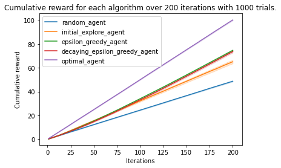

In e-commerce and other digital domains, companies frequently want to offer personalised product recommendations to users. This is hard when you don't yet know a lot about the customer, or you don't understand what features of a product are pertinent. Thinking about it as a multi-armed bandit problem is a useful way to get around this. In this tutorial, we will learn how multi-armed bandit algorithms can be applied to the challenge of product recommendation and then explain how to solve it in code.
Multi-armed bandit algorithms can:
First of all, we define the base class. In this, we initialize with pay-off probabilities in a list format and define a sample method that will provide the reward for the action taken. The agent do not know these pay-off values and the goal for that agent is to find these pay-offs by exploring and exploiting the environment. For example, if pay-off probability is 90%, we will get a reward of 1 most often and in this manner, the agent will get an idea of this secret pay-off.
class Bandit:
"""A useful class containing the multi-armed bandit and all its actions.
Attributes:
actions The actions that can be performed, numbered automatically 0, 1, 2...
payoff_probs The underlying pay-off probabilities for each action.
"""
def __init__(self, payoff_probs):
self.actions = range(len(payoff_probs))
self.pay_offs = payoff_probs
def sample(self, action):
"""Sample from the multi-armed by performing an action.
Args:
action (int): The action performed on the multi-armed bandit.
Returns:
int: It returns a reward based on that arm's pay-off probability.
"""
selector = random.random()
return 1 if selector <= self.pay_offs[action] else 0
Random agent is our baseline. This agnt will randomly pick an action and get the reward for that action. Our hypothesis is that, this will be the worst performing agent.
def random_agent(bandit, iterations):
"""Randomly select an action and reward."""
for i in range(iterations):
a = random.choice(bandit.actions)
r = bandit.sample(a)
yield a, r
This one is out benchmark. In this, we will expose the hidden pay-off values so that the agent will always take the best possible action and get the maximum probable reward.
def optimal_agent(bandit, iterations):
"""Select the best action by taking a sneak-peek at the bandit's probabilities."""
for i in range(iterations):
a = bandit.pay_offs.index(max(bandit.pay_offs))
r = bandit.sample(a)
yield a, r
This agent first explore the environment for N rounds and then start taking the action which gave maximum reward during exploration.
def initial_explore_agent(bandit, iterations, initial_rounds = 10):
"""Initially explore initial_rounds times and then stick to the best action."""
pay_offs = dict()
best_action = -1
for i in range(iterations):
# for the initial rounds pick a random action
if i < initial_rounds:
a = random.choice(bandit.actions)
r = bandit.sample(a)
#update rewards
if a in pay_offs:
pay_offs[a].append(r)
else:
pay_offs[a] = [r]
# otherwise pick the best one thus far
else:
if (best_action == -1):
# check for the lever with the best average payoff
mean_dict = {}
for key,val in pay_offs.items():
mean_dict[key] = np.mean(val)
best_action = max(mean_dict, key=mean_dict.get)
a = best_action
r = bandit.sample(a)
yield a, r
This agent always explore the environment with a probability of epsilon, which is 20% in our case. This means, out of 5, this agent will recommend the highest-probability reward product 4 times and recommend a random product 1 time.
def epsilon_greedy_agent(bandit, iterations, epsilon = 0.2, initial_rounds = 1):
"""Use the epsilon-greedy algorithm by performing the action with the best average
pay-off with the probability (1-epsilon), otherwise pick a random action to keep exploring."""
pay_offs = dict()
for i in range(iterations):
# sometimes randomly pick an action to explore
if random.random() < epsilon or i < initial_rounds:
a = random.choice(bandit.actions)
# otherwise pick the best one thus far
else:
# check for the lever with the best average payoff
new_dict = {}
for key,val in pay_offs.items():
new_dict[key] = np.mean(val)
a = max(new_dict, key=new_dict.get)
r = bandit.sample(a)
#update rewards
if a in pay_offs:
pay_offs[a].append(r)
else:
pay_offs[a] = [r]
yield a, r
This agent will initially take random actions with epsilon probability but this epsilon keep decaying so that, at the begininng, agent wil recommend 1 random product out of 5, but over time, this will ultimately become zero, and agent will recommend all 5 products with highest possible reward probability.
def decaying_epsilon_greedy_agent(bandit, iterations, epsilon = 0.2, initial_rounds = 1, decay = 0.999):
pay_offs = dict()
for i in range(iterations):
# sometimes randomly pick an action
if random.random() < epsilon or i < initial_rounds:
a = random.choice(bandit.actions)
# otherwise pick the best one thus far
else:
# check for the lever with the best average payoff
new_dict = {}
for key,val in pay_offs.items():
new_dict[key] = np.mean(val)
a = max(new_dict, key=new_dict.get)
r = bandit.sample(a)
#update rewards
if a in pay_offs:
pay_offs[a].append(r)
else:
pay_offs[a] = [r]
epsilon *= decay
yield a, r
We are creating 7 arms. These arms can be compared to 7 products in recommendation domain. These pay-offs represent the buying probability let's say. That means, there is a 25% probability that custom will buy first product and 50% probability of buying third product. And interestingly, no chance of buying last product.
1000 trials is just to smoothen-out the results. 200 iterations means we will recommend the given 7 items to that customer 200 times. The selection of this item-to-be-recommended would depend on the agent.
random.seed(200) #used for reproducibility
pay_offs = [0.25, 0.3, 0.5, 0.1, 0.3, 0.25, 0]
bandit = Bandit(pay_offs)
methods = [random_agent, initial_explore_agent, epsilon_greedy_agent, decaying_epsilon_greedy_agent, optimal_agent]
number_of_iterations = 200
number_of_trials = 1000
for m in range(len(methods)):
method = methods[m]
total_rewards = []
list_of_cumulative_rewards = []
fan = []
for trial in range(number_of_trials):
total_reward = 0
cumulative_reward = []
for a, r in method(bandit, number_of_iterations):
total_reward += r
cumulative_reward.append(total_reward)
#plt.plot(cumulative_reward, alpha=.02, color=colors[m])
total_rewards.append(total_reward)
if trial == 0:
fan = pd.DataFrame(cumulative_reward, columns=['y'])
fan['x'] = fan.index+1
else:
fan2 = pd.DataFrame(cumulative_reward, columns=['y'])
fan2['x'] = fan2.index+1
fan = fan.append(fan2, ignore_index=True)
list_of_cumulative_rewards.append(cumulative_reward)
sns.lineplot(x='x', y='y', data=fan) #default is to use bootstrap to calculate confidence interval
print(method.__name__, ":", np.mean(total_rewards))
plt.title("Cumulative reward for each algorithm over {} iterations with {} trials.".format(number_of_iterations, number_of_trials))
plt.ylabel("Cumulative reward")
plt.xlabel("Iterations")
plt.legend([method.__name__ for method in methods])
f.savefig("Iterations.pdf", bbox_inches='tight')
f.savefig("Iterations.svg", bbox_inches='tight')
plt.show()
As expected, random agent performed worst and optimal agent performed best. Epsilon greedy and its decaying version performed equally well and it is better than explore-than-exploit method.

Congratulations!